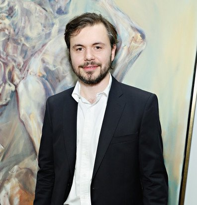

Igor Bogojević je rođen 10. marta 1980. godine u Podgorici, gdje je završio osnovnu školu i gimnaziju. Na cetinjskom Fakultetu likovnih umjetnosti diplomirao je 2002. u klasi Dragana Karadžića, a titulu magistra umjetnosti na istom fakultetu stekao je 2007. gdje mu je mentor bio Bane Sekulić. Nagrađen je nagradom Univerziteta Crne Gore za postignute rezultate tokom studija.
Godine 2003. nagrađen je stipendijom grčke vlade za dvogodišnje specijalističke studje na atinskoj Akademiji lijepih umjetnosti, koju je uspješno završio dvije godine kasnije u klasi prof. Triandafilosa Patraskidisa. Naredne godine priređuje veliku samostalnu izložbu u galeriji atinskog Kulturnog centra Melina Merkuri, koja nailazi na veliko interesovanje grčkih medija.
U Atini je živio do 2007. godine kada se vraća u Crnu Goru i nedugo zatim, sljedeće godine, odlazi u Pariz u Cite des Art gdje boravi devet mjeseci. Nakon toga provodi godinu dana u ateljeu slikara Petra Omčikusa i Kose Bokšan u Parizu. Godine 2011. odlazi u Njujork na poziv The Broadway Gallery NYC gdje ostaje da živi i stvara u svom ateljeu na Menhetnu.
Dobitnik je Zlatne medalje na Salonu Academie Internationale Ecole de la Loire, France 2009. godine i nagrade za crtež Atlantic Gallery New York 2015.

Igor Bogojević je rođen 10. marta 1980. godine u Podgorici